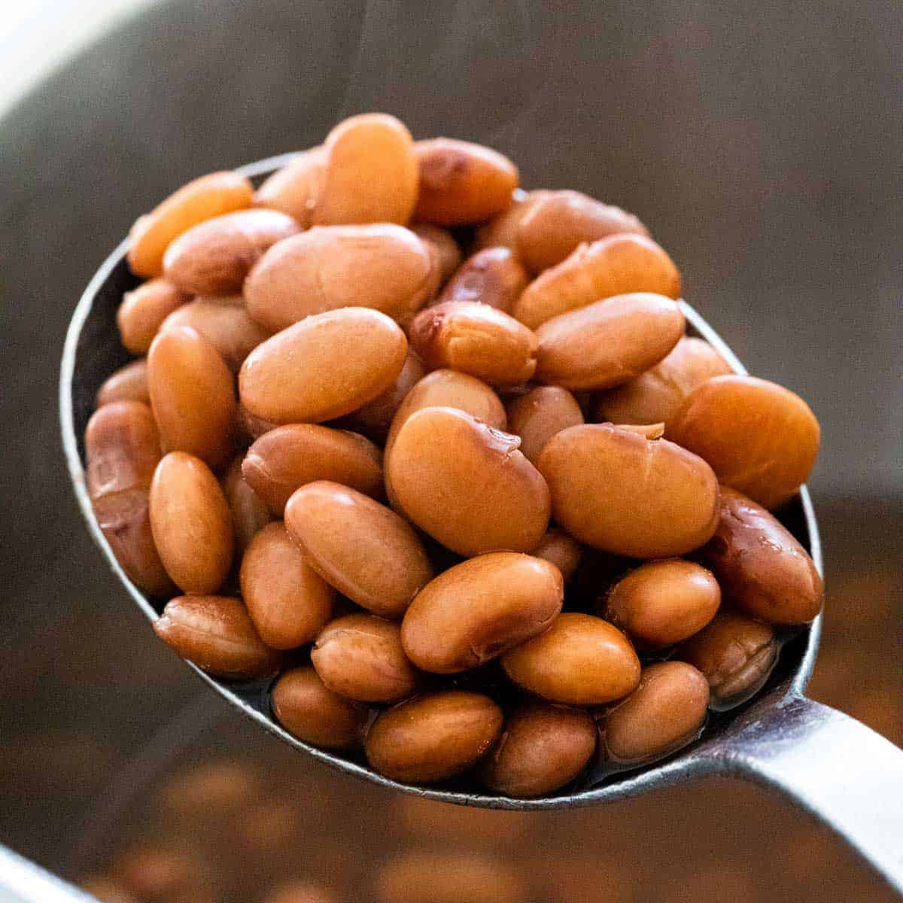

Pinto Beans

Description
A an easy and simple stew to brew
Ingredients
- Two cups of pinto beans
- Three garlic cloves
- Salt
- Optional garnish: tomato, lime and cheese
Steps
- Soak two cups of dried pinto beans overnight
- Drain and rinse beans
- Transfer beans onto a pot and add six cups of water
- Boil for two hours, checking periodically until beans are tender
- Once tender, add salt to taste
- Garnish with dice tomato, a splash of lime, and cheese